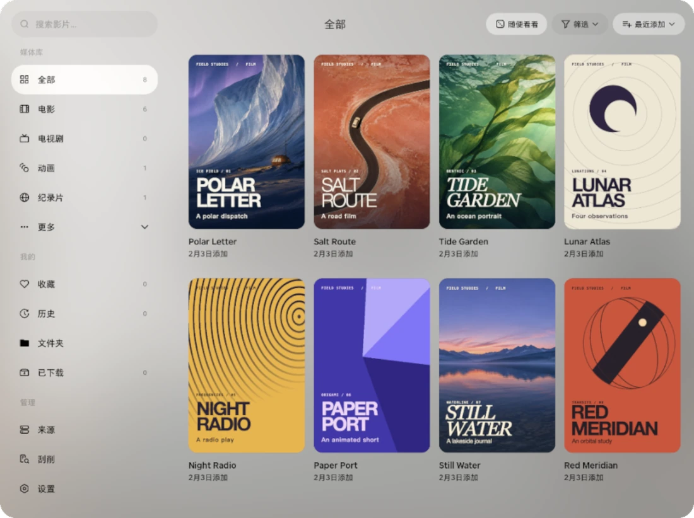
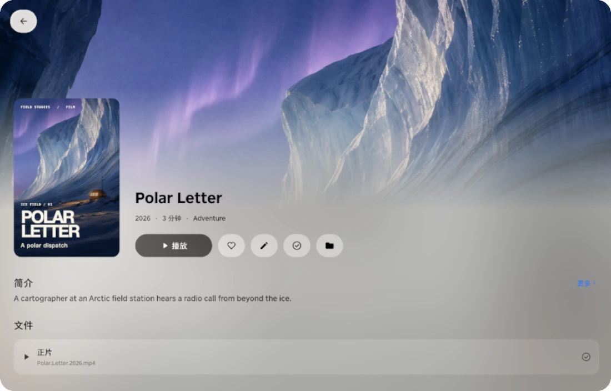
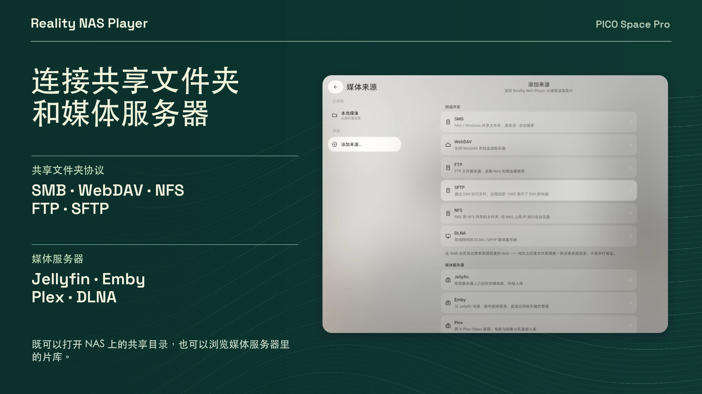
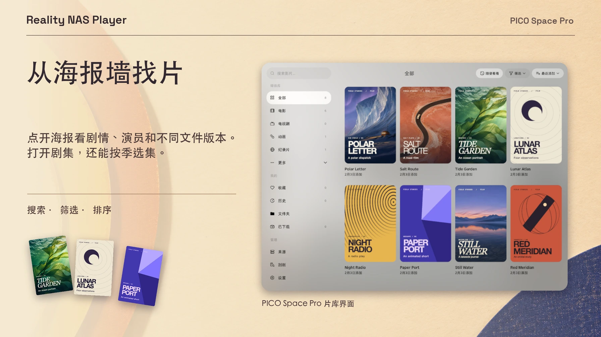
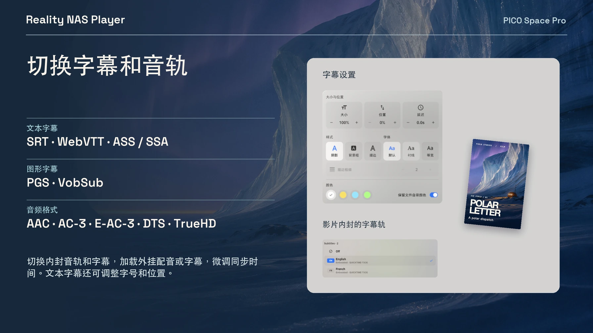
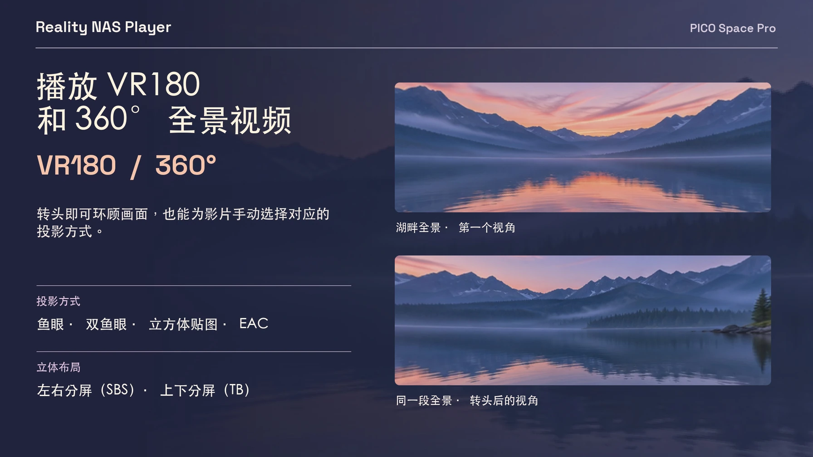

电影
按片名和年份在 every.film、NeoDB 查找影片，可以通过 Wikidata 和 Open Film Database 核对身份，无需申请电影数据库密钥。
为 PICO Space Pro 打造
识别电影、电视剧、纪录片和动漫。点开海报就能看演员、挑选剧集，直接播放 NAS 里的文件。

即使文件只叫 video1.mkv，扫描器也可以从上层目录读到片名和年份，还会沿用影片旁的 Kodi NFO、海报和背景图。手动改过的匹配会保留到下次扫描。
Polar Letter (2026)/
Polar.Letter.2026.mp4
movie.nfo
poster.jpg

按片名和年份在 every.film、NeoDB 查找影片，可以通过 Wikidata 和 Open Film Database 核对身份，无需申请电影数据库密钥。
从剧集目录和 S02E03 这样的标记提取剧名与季集号。tvshow.nfo 和分集 NFO 可以补充整部剧和单集资料。
单部纪录电影按片名和年份走电影片目。系列纪录片按节目目录、季集号和本地 NFO 整理。
通过 AniList、Bangumi 核对日文名、罗马字和译名。字幕组文件只有简称时，同一目录其他集的完整片名也能作为线索。
要按文件夹扫描，可以连接网络共享。已有媒体服务器的片库，也可以直接接入。受密码保护的来源使用它自己的登录凭据。

在海报墙搜索、筛选或排序。点开一张看剧情和演员，在同片的多个文件版本间选择，或按季挑集，从保存的进度继续播放。

片库可识别 25 种视频文件扩展名，也支持兼容的未加密光盘镜像。文件内的编码、档次、分辨率及头显的解码能力决定实际播放效果。

播放中可切换内封音轨、加载外挂配音或字幕，单独调整同步时间。文字字幕还可以设置字号和位置。
同一部影片可以在四个场景里的银幕上播放。太空观景厅有五个座位，包括两侧窗边座。私人影院和小镇广场各有三个观看位置。

360° 录像可以转头环顾四周，VR180 覆盖面前的半球视野。播放器会读取投影信息，也可以为某段视频手动更改投影与立体布局。

在 PICO OS 6 安装 v1.2.1 签名 APK，打开本地影片，或在「媒体来源」中添加 NAS。